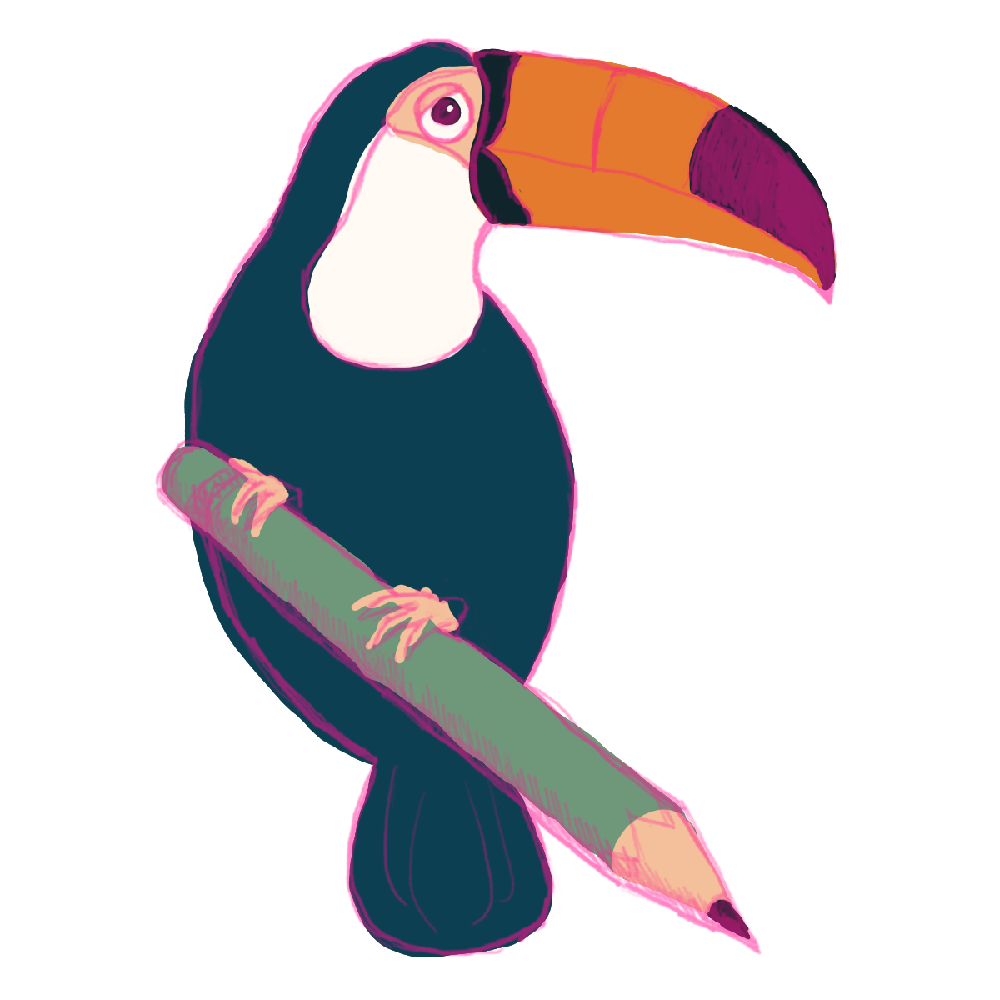

Capture the essentials
Learner or adult goal, subject, current level, deadline, location, availability and whether a private matching conversation is requested.

ToucanLearnA regional enquiry route for children, young people and adults, with location, subject, need and a suitable tutor checked before anything is arranged.
The person who takes the enquiry is not automatically the tutor. Toucan confirms the location, subject, tutor suitability, availability and price first.
Each enquiry should end with a useful next action, even when in-person support is unavailable or a different tutor or format is needed.
Learner or adult goal, subject, current level, deadline, location, availability and whether a private matching conversation is requested.
Toucan confirms subject suitability, delivery format and who is appropriate to tutor. Any safeguarding issue must be resolved before tutoring is agreed.
You receive a clear response about fit, tutor, format, timing and price before booking.
Good to know: Joshua is currently taking new online enquiries only. In-person enquiries are matched to an available regional tutor in Henley-on-Thames, nearby Oxfordshire areas or Bristol; the location, tutor, format and price are confirmed before booking.
Tell us the subject, learner or adult goal, postcode area and availability. We will confirm whether a suitable tutor is available in your area.